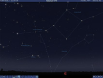
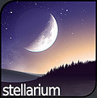

stellarium
Intro
Stellarium is free GPL software which renders realistic skies in real time with openGL. It is available for Linux/Unix, Windows and MacOSX.
With Stellarium, you really see what you can see with your eyes, binoculars or a small telescope.
Stellarium is also used in planetariums.
Spotlight

Stellarium 0.7.1 has been released. It is a bugfix release, so well worth the download.
News
- [26-sept-2005]
Da Woon Jung provides the MacOSX package of version 0.7.1. Thanks go to him, and to the other people who made an effort. - [22-sept-2005]
We're looking for someone to create a MacOSX package for version 0.7.1. We would be very grateful if you can find some time to help us out. Contact us, and we'll make the package available to all Mac users. - [19-sept-2005]
A glitch in the Windows installer is fixed. Please download again if Stellarium 0.7.1 didn't work for you. - [17-sept-2005]
Release 0.7.1 irons out some bugs that surfaced when 0.7.0 went public. Your location coordinates will now be saved from within the program, among other bugfixes. And with this version 0.7, some interesting Stellarium scripts are appearing. Have a look in the forum to see what people are doing, or share your own scripts. - [8-sept-2005]
A new version has been released! Version 0.7.0 is the result of almost a year of development. Check out the changelog to see what's new, and tell us what you think. Updates to the FAQ will follow shortly. Thanks to the team for the many improvements in this version. Stellarium is now scriptable, new languages have been added, mouse dragging is available... explore, and enjoy! - [2-sept-2005]
Stellarium has attracted a new developer: Tony is working to implement some ideas in the user interface. Some of his work will already be in version 0.7.0 of Stellarium, which is now only days away from release (if everything goes according to plan). Your encouragement is, as always, appreciated! - [24-jun-2005]
Contribute to Stellarium, STOP Software Patents! The Software Patents Directive, as approved by the European Council of Ministers, would codify US-style Software Patents in the European Union. If that happens, software developers will no longer own what they write and can be sued for selling or distributing their own software. This would not only endanger your job, but the entire European software sector. Patents on pure logic would even restrict the freedom of publication. On the 6th of July, the European Parliament will have the last chance to prevent this. To do so, 367 of the 732 members must be present and vote for the right amendments. Please visit this site and act : http://noepatents.eu.org. - [20-jan-2005]
The first version of the FAQ is finally available thanks to Johan Meuris who compiled it from the forums. - [22-nov-2004]
The 2nd and hopefully last installation bug in windows Version 0.6.2 is re-fixed, please re-re-download the package, re-sorry for the re-mistake... - [20-nov-2004]
The installation bug in windows Version 0.6.2 is fixed, please re-download the package, sorry for the mistake... - [18-nov-2004]
Version 0.6.2 released. This version just fix bugs from 0.6.1 : the milky way orientation bug, the timezone shift bug and video card problem on linux are now fixed. - [07-nov-2004]
As you can see, Stellarium website has been totally rewritten, hope you like it this way. Send your comments in the feedback forum links. - [17-oct-2004]
Stellarium v0.6.1 released! This new release includes the long awaited impressive constellation art images by Johan Meuris! It also features the addition of a new immersive landscape skin, improved planets and satellites orbits and many other features. Thanks to all the developers, packagers and graphists who helped me to achieve this new version!
{kind=link}
{kind=link}
SourceForge
The Stellarium project heavily uses SourceForge services.
You can access the project page there : http://sourceforge.net/projects/stellarium/